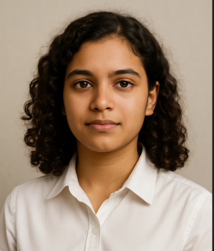

NITTA ANSHU SRI

Summary
Enthusiastic and motivated first-year undergraduate student at IIT Roorkee with a strong interest in software development, problem-solving, and public service. Passionate about learning new technologies, building impactful projects, and contributing to meaningful change. Currently developing skills in C++, Data Structures, Web Development, and exploring startup ecosystems. Eager to grow through hands-on experience, collaborative work, and continuous self-improvement
Education
- Indian Institute of Technology (IIT) Roorkee
Bachelor of Technology in [Your Branch] | 2024 – 2028 (Expected)
Roorkee, Uttarakhand, India
- Narayana Junior College (N120 Branch)
Intermediate (Class 11 & 12), MPC Stream | 2022 – 2024
Vijayawada, Andhra Pradesh
Score: 983 / 1000 (98.3%)
- Narayana Co-School
High School (Class 8 to 10), CBSE Board | 2019 – 2022
Vijayawada, Andhra Pradesh
Score: 468 / 500 (93.6%)
- NSM Public School
Middle School (Class 6 to 7) | 2017 – 2019
Vijayawada, Andhra Pradesh
- Genesis International School
Primary School (Kindergarten to Class 5) | 2010 – 2017
Hyderabad, Telangana
Work Experience
Web Development Intern – CodeCamp Pvt. Ltd.
March 2025 – Mid-April 2025 (During 2nd Semester)
skills
-
Technical Skills:
- Programming Languages: C++, Python (basic)
- Web Development: HTML5, CSS3, Responsive Design
- Version Control: Git (basic)
- Tools: VS Code, Canva, Notion, Google Docs
- Platforms: Windows, GitHub
-
Soft Skills:
- Strong communication (improving)
- Teamwork and collaboration
- Problem-solving mindset
- Eager to learn and explore new fields
- Time management and multitasking
Hobbies
Contact